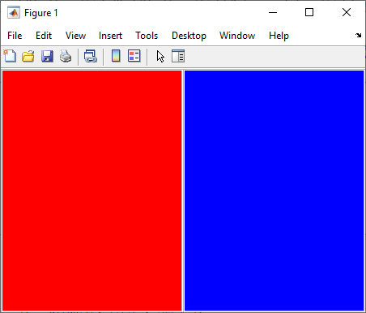
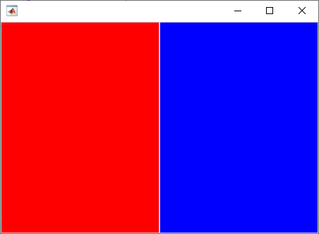

Update App Figure and Containers
MATLAB® provides two functions to create a figure window: figure
and uifigure. The uifigure function creates a figure
that is specially configured for app building. It is the recommended function to use when
building new apps programmatically, and is the function that App Designer uses to create apps.
If you have existing apps created using the figure function, consider
updating those apps to use the uifigure function.
Replace Calls to figure with uifigure
To update your app figures and containers, first replace all calls to the
figure function in your app code with calls to the uifigure function:
fig = uifigure;
Specify Target Object
After updating the figure creation function calls, if you plot data or create objects in your app without explicitly specifying the target object for the operation, running your code can create additional, unexpected figure windows. To address this behavior, further update your app code using one of these options:
Specify the target or parent object in function calls — This is the best practice to avoid unexpected behavior. Most app building and graphics functions have an option for specifying the parent or target. For example, this code creates a panel in a UI figure by returning the
Figureobject as a variable and then providing that variable as the first input to theuipanelfunction.fig = uifigure; pnl = uipanel(fig);
Set the
HandleVisibilityproperty value of the UI figure to'callback'— Use this option when your code that relies on objects in your app becoming the current object is invoked only from within callback functions in your app. WhenHandleVisibilityis'callback', theFigureobject is visible only from within callbacks or functions invoked by callbacks, and not from within functions invoked from the Command Window.Set the
HandleVisibilityproperty value of the UI figure to'on'— Use this option to specify that the UI figure behavior is the same as the default behavior for figures created with thefigurefunction. This option is not recommended because it can result in unexpected changes to the app UI.
Adjust Container Positions
Objects such as Panel, TabGroup, and
ButtonGroup objects can be parented to figures created using either the
figure or uifigure function. In general, these
objects behave the same way in a uifigure-based app as they do in a
figure-based app. However, some container objects have differences in
default Position and Units properties.
If your app contains panels, tab groups, or button groups that are mispositioned after
you transition to using the uifigure function, you have multiple
options to update your code:
Use a Grid Layout Manager — Use this option if you want to refactor your app layout using modern layout tools. You can use a grid layout manager to align and specify the resize behavior of UI components by laying them out in a grid, which can greatly simplify your layout and resize code.
Specify Container Positions — Use this option if you want to quickly update your positioning code or if you want to continue to manage the layout of your app using the
Positionproperty andSizeChangedFcncallbacks.
Use a Grid Layout Manager
To manage your app layout and resize behavior relative to the size of the figure
window, use a grid layout manager. Create a grid layout manager in your UI figure by using
the uigridlayout function, and parent your app components and
containers to the grid layout manager. For more information about using a grid layout
manager to lay out your app, see Lay Out Apps Programmatically.
This table shows an example of a figure-based app with two panels
laid out using the Position property, and the updated
uifigure-based app laid out using a grid layout manager.
| Code | App |
|---|---|
Panels in a f = figure; f.Position = [500 500 450 300]; p1 = uipanel(f); p1.Position = [0 0 0.5 1]; p1.BackgroundColor = "red"; p2 = uipanel(f); p2.Position = [0.5 0 0.5 1]; p2.BackgroundColor = "blue"; |
 |
Panels in a f = uifigure; f.Position = [500 500 450 300]; gl = uigridlayout(f,[1 2]); gl.Padding = [0 0 0 0]; gl.ColumnSpacing = 0; p1 = uipanel(gl); p1.Layout.Row = 1; p1.Layout.Column = 1; p1.BackgroundColor = "red"; p2 = uipanel(gl); p2.Layout.Row = 1; p2.Layout.Column = 2; p2.BackgroundColor = "blue"; |
 |
Specify Container Positions
Alternatively, you can continue to use the Position property to
lay out your app. While Panel, TabGroup, and
ButtonGroup objects that are parented to a figure created using the
figure function use normalized units for their
Position by default, these containers in a UI figure use pixel
units by default instead. Pixel units are recommended for app building because most
MATLAB app building functionality measures distances in pixels.
Follow these steps to update the property values of the Panel,
TabGroup, and ButtonGroup objects in your app to
use pixel units:
In your
figure-based app, after laying out the object, set the value of itsUnitsproperty to"pixels", and then query the value of itsPositionproperty.For example, this code creates two panels laid out using normalized units, converts the units to pixels, and displays the corresponding pixel position values.
f = figure; f.Position = [500 500 450 300]; p1 = uipanel(f); p1.Position = [0 0 0.5 1]; p1.BackgroundColor = "red"; p2 = uipanel(f); p2.Position = [0.5 0 0.5 1]; p2.BackgroundColor = "blue"; p1.Units = "pixels"; p2.Units = "pixels"; p1PixelPosition = p1.Position p2PixelPosition = p2.Position
p1PixelPosition = 1 1 225 300 p2PixelPosition = 226 1 225 300In your
uifigure-based app, set thePositionproperty of each object to the equivalent pixel-based position.f = uifigure; f.Position = [500 500 450 300]; p1 = uipanel(f); p1.Position = [1 1 225 300]; p1.BackgroundColor = "red"; p2 = uipanel(f); p2.Position = [226 1 225 300]; p2.BackgroundColor = "blue";